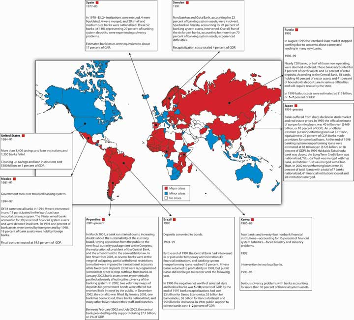

Although the economy improved after 1933, regulatory regimes did not. Ever fearful of a repeat of the Great Depression, U.S. regulators sought to make banks highly safe and highly profitable so none would ever dare to fail. Basically, the government regulated the interest rate, assuring banks a nice profit—that’s what the 3-6-3 ruleTongue-in-cheek rule of thumb for heavily regulated banks that took deposits at 3 percent, made loans at 6 percent, and allowed their managers to leave at 3 p.m. to play golf. was all about. Regulators also made it difficult to start a new bank to keep competition levels down, all in the name of stability. The game worked well until the late 1960s, then went to hell in a handbasket as technological breakthroughs and the Great Inflation conspired to destroy traditional banking.
Here’s where things get interesting. Savings and loan associations were particularly hard hit by the changed financial environment because their gaps were huge. The sources of their funds were savings accounts and their uses were mortgages, most of them for thirty years at fixed rates. Like this:
| Typical Savings and Loan Bank Balance Sheet (Millions USD) | |
|---|---|
| Assets | Liabilities |
| Reserves $10 | Deposits $130 |
| Securities $10 | Borrowings $15 |
| Mortgages $130 | Capital $15 |
| Other assets $10 | |
| Totals $160 | $160 |
Along comes the Great Inflation and there go the deposits. Then S&L’s balance sheets looked like this:
| Typical Savings and Loan Bank Balance Sheet (Millions USD) | |
|---|---|
| Assets | Liabilities |
| Reserves $1 | Deposits $100 |
| Securities $1 | Borrowings $30 |
| Mortgages $130 | Capital $10 |
| Other assets $8 | |
| Totals $140 | $140 |
This bank is clearly in deep doodoo. Were it alone, it soon would have lost its remaining capital and failed. But there were some 750 of them in like situation. So they went to the regulators and asked for help. The regulators were happy to oblige because they did not want to have a bunch of failed banks on their hands, especially given that the deposits of those banks were insured. So regulators eliminated the interest rate caps and allowed S&Ls to engage in a variety of new activities, like making commercial real estate loans and buying junk bonds, hitherto forbidden. Given the demise of traditional banking, that was a reasonable response. The problem was that most S&L bankers didn’t have a clue about how to do anything other than traditional banking. Most of them got chewed. Their balance sheets then began to resemble a train wreck:
| Typical Savings and Loan Bank Balance Sheet (Millions USD) | |
|---|---|
| Assets | Liabilities |
| Reserves $1 | Deposits $120 |
| Securities $1 | Borrowings $22 |
| Mortgages $130 | Capital $0 |
| Other assets $10 | |
| Totals $142 | $142 |
Now comes the most egregious part. Fearful of losing their jobs, regulators kept these economically dead (capital < $0) banks alive. Instead of shutting them down, they engaged in what is called regulatory forbearanceWhenever regulators, for whatever reason, consciously decide not to enforce one or more regulations.. Specifically, they allowed S&Ls to add “goodwill” to the asset side of their balance sheets, restoring them to life—on paper. (Technically, they allowed the banks to switch from generally accepted accounting principles [GAAP] to regulatory accounting principles [RAP].) Seems like a cool thing for the regulators to do, right? Wrong! A teacher can pass a kid who can’t read, but the kid still can’t read. Similarly, a regulator can pass a bank with no capital, but still can’t make the bank viable. In fact, the bank situation is worse because the kid has other chances to learn to read. By contrast zombie banks, as these S&Ls were called, have little hope of recovery. Regulators should have shot them in the head instead, which as any zombie-movie fan knows is the only way to stop the undead dead in their tracks.www.margrabe.com/Devil/DevilU_Z.html;www.ericlathrop.com/notld
Recall that if somebody has no capital, no skin in the game, to borrow Warren Buffett’s phrase again, moral hazard will be extremely high because the person is playing only with other people’s money. In this case, the money wasn’t even that of depositors but rather of the deposit insurer, a government agency. The managers of the S&Ls did what anyone in the same situation would do: they rolled the dice, engaging in highly risky investments funded with deposits and borrowings for which they paid a hefty premium. In other words, they borrowed from depositors and other lenders at high rates and invested in highly risky loans. A few got lucky and pulled their banks out of the red. Most of the risky loans, however, quickly turned sour. When the whole thing was over, their balance sheets looked like this:
| Typical Savings and Loan Bank Balance Sheet (Millions USD) | |
|---|---|
| Assets | Liabilities |
| Reserves $10 | Deposits $200 |
| Securities $10 | Borrowings $100 |
| Mortgages $100 | Capital −$60 |
| Goodwill $30 | |
| Crazy, risky loans $70 | |
| Other assets $20 | |
| Totals $240 | $240 |
The regulators could no longer forbear. The insurance fund could not meet the deposit liabilities of the thousands of failed S&Ls, so the bill ended up in the lap of U.S. taxpayers.
In the 1980s, in response to the Great Inflation and the technological revolution, regulators in Scandinavia (Sweden, Norway, and Finland) deregulated their heavily regulated banking systems. Bankers who usually lent only to the best borrowers at government mandated rates suddenly found themselves competing for both depositors and borrowers. What happened?
Scandinavia suffered from worse banking crises than the United States. In particular, Scandinavian bankers were not very good at screening good from bad borrowers because they had long been accustomed to lending to just the best. They inevitably made many mistakes, which led to defaults and ultimately asset and capital write-downs.
The most depressing aspect of this story is that the United States has unusually good regulators. As Figure 11.3 "Banking crises around the globe through 2002" shows, other countries have suffered through far worse banking crises and losses. Note that at 3 percent of U.S. GDP, the S&L crisis was no picnic, but it pales in comparison to the losses in Argentina, Indonesia, China, Jamaica and elsewhere.
Figure 11.3 Banking crises around the globe through 2002
Gerard Caprio and Daniela Klingebiel, Episodes of Systemic and Borderline Financial Crises (World Bank, January 2003)